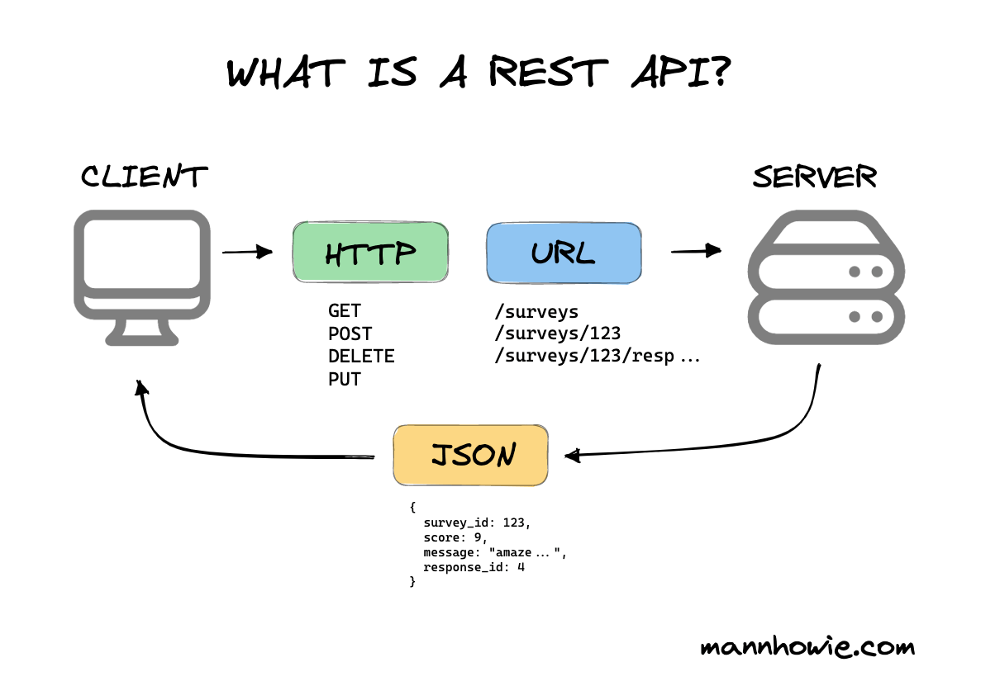
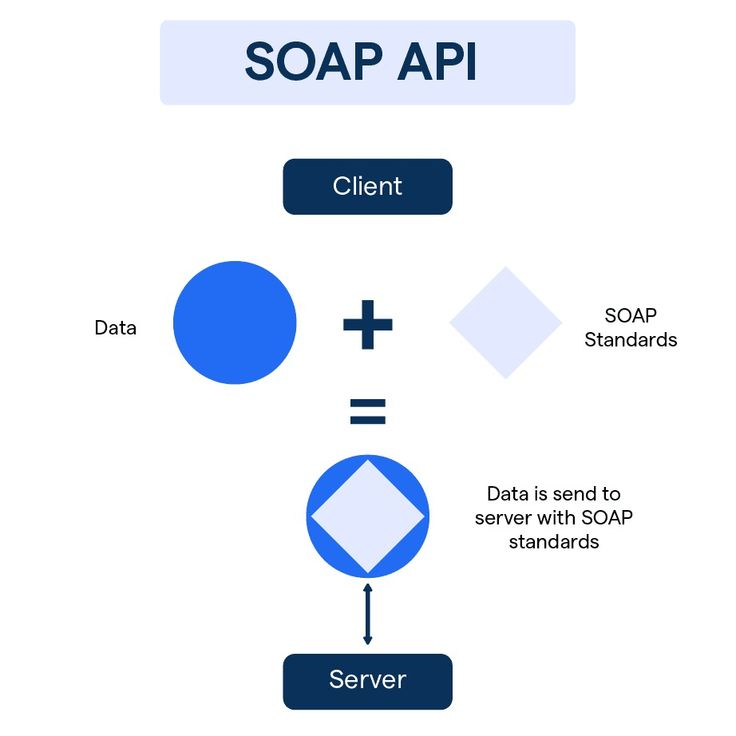
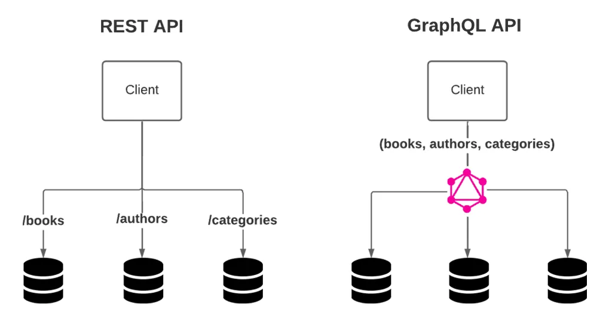
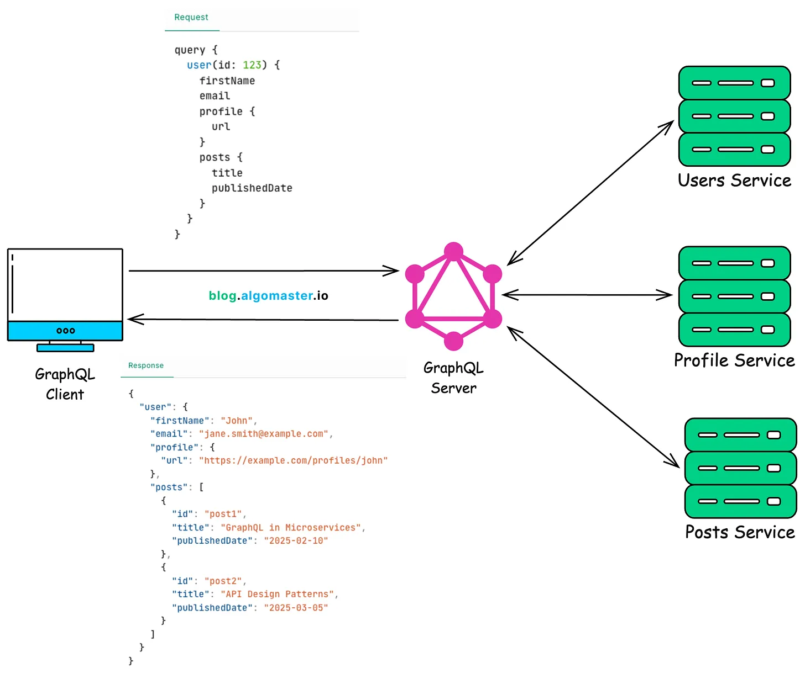
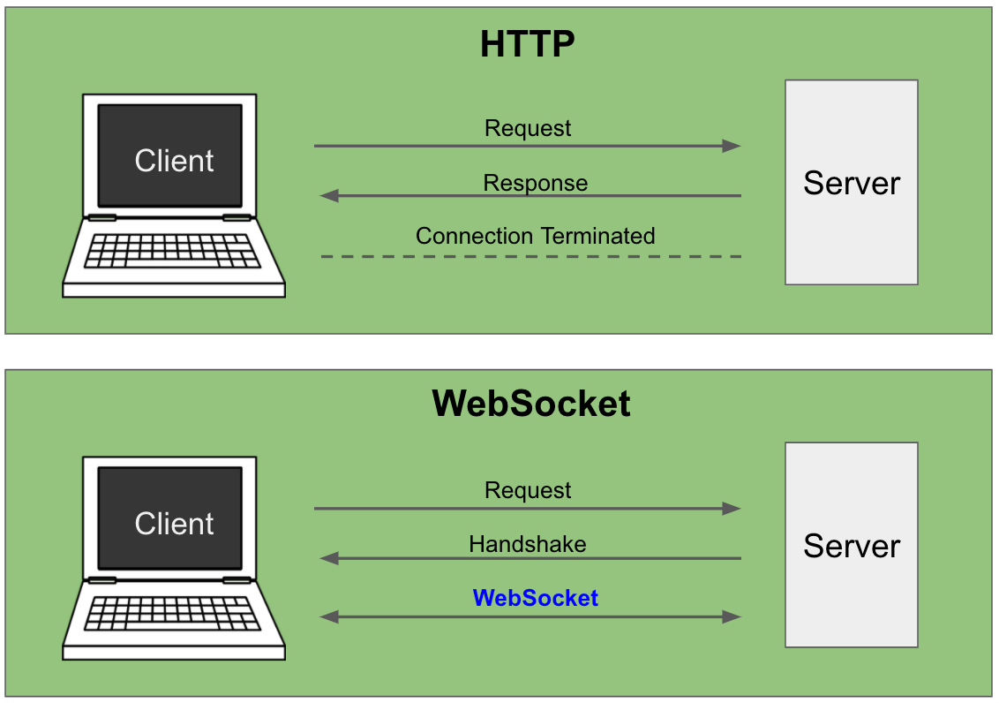
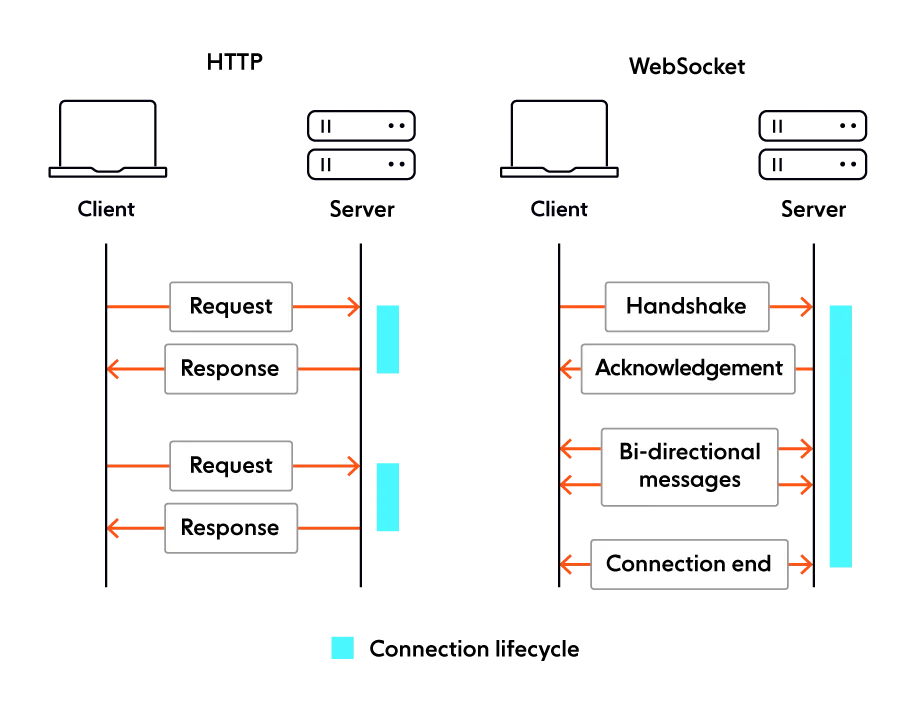
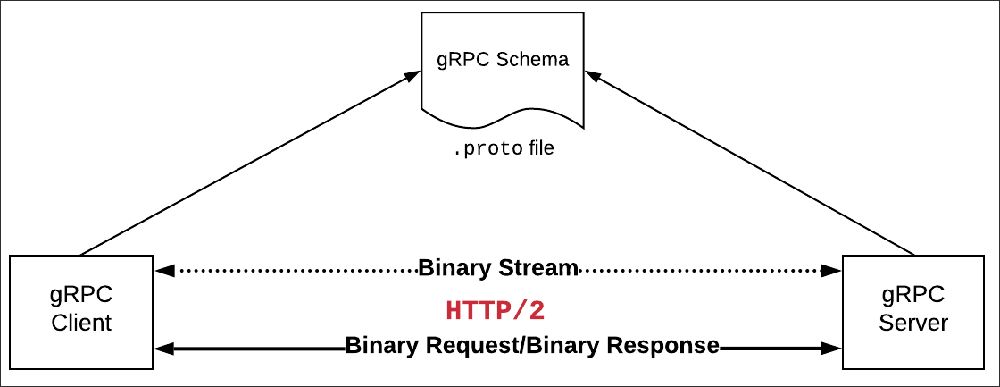
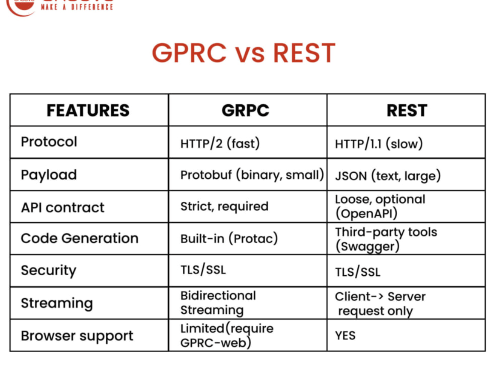
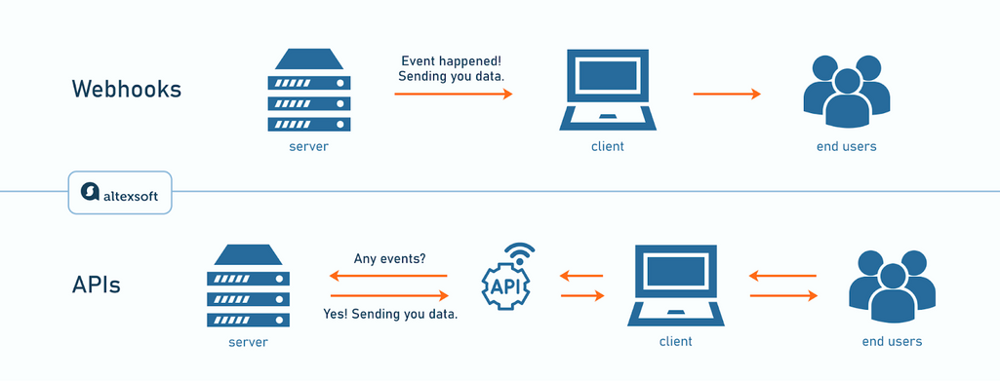
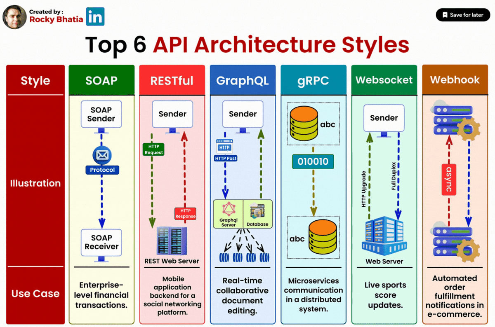

System Design Mastery
Master scalable systems with premium insights
🌐 API Architecture Styles — Structuring APIs for Clarity and Scalability
1️⃣ REST API (Representational State Transfer)
What is it?
REST is an API architecture where resources are accessed using HTTP methods like GET, POST, PUT, DELETE.
Example:
GET /users/123
POST /orders
PUT /profile
DELETE /cart
REST treats everything as a resource.
Unique Feature:
Uses resource-based endpoints with standard HTTP methods.

HTTP Methods Used
Real-world example
GET
/products/10 returns product data.
Used by:
- Web apps
- Mobile apps
- Microservices
Advantages
- ✅ Simple and widely used
- ✅ Stateless → easy to scale
- ✅ Works well with HTTP caching
- ✅ Large ecosystem support
Disadvantages
- ❌ Over-fetching (gets more data than needed)
- ❌ Under-fetching (may need multiple requests)
- ❌ Multiple endpoints needed
Example:
To get user + posts:
GET /user
GET /posts
2️⃣ SOAP (Simple Object Access Protocol)
What is it?
SOAP is a protocol for
exchanging structured data using XML.
It is strict and heavier than REST.
Uses:
- XML
- WSDL contract
- Strong standards
Example SOAP message:
<Envelope>
<Body>
<GetUser>
<id>123</id>
</GetUser>
</Body>
</Envelope>
Advantages
- ✅ Very secure (WS-Security)
- ✅ Built-in reliability
- ✅ Strong contracts (WSDL)
- ✅ Transaction support
Disadvantages
- ❌ Heavy XML format
- ❌ Complex to implement
- ❌ Slower than REST
- ❌ Not flexible
Unique Feature:
Strict enterprise-level security and standards.
Why choose SOAP?
- Banking systems
- Government services
- Enterprise systems requiring strong security
Example: Payment gateway integrations.
3️⃣ GraphQL
What it is
GraphQL lets the client request exactly the data it needs from a single endpoint instead of multiple endpoints like REST.
Example Query:
{
user(id:101){
name
posts
orders {
id
price
}
}
}Server returns only requested fields.

Single endpoint in GraphQL vs multiple endpoints in REST
Advantages
- ✅ No over-fetching (get exactly what data is needed)
- ✅ Single endpoint
- ✅ Flexible queries
- ✅ Efficient for mobile apps
Disadvantages
- ❌ Harder to cache
- ❌ Complex server implementation
- ❌ Can cause heavy queries if not controlled
Unique Feature:
Client controls what data to fetch.

Why choose GraphQL?
- Complex data relationships
- Mobile apps needing optimized responses
- Multiple related resources
Example: Facebook API.
4️⃣ WebSockets
What it is
WebSockets provide
real-time two-way communication between client and server.
After connection : Client ↔ Server
communicate anytime.
Unlike HTTP (REST API):
- Connection stays open
- Both sides can send messages anytime

Advantages
- ✅ Real-time communication
- ✅ Low latency
- ✅ Efficient for frequent updates
- ✅ Bidirectional communication
Disadvantages
- ❌ Harder to scale
- ❌ Real-time connection consumes resources
- ❌ More complex infrastructure

Unique Feature:
Full-duplex real-time communication.
Why choose WebSockets?
- Chat applications
- Gaming
- Live dashboards
- Stock trading systems
Example: WhatsApp messaging.
5️⃣ gRPC
What it is
gRPC is a
high-performance RPC framework developed by Google that allows services to communicate
efficiently. gRPC uses HTTP/2 and Protocol Buffers (binary format).
Instead of
REST-style
URLs, you call functions directly.
Example:
service UserService {
rpc GetUser(UserRequest) returns (UserResponse);
}
GetUser(user_id)Client calls service like a function.

What is HTTP/2?
HTTP/2 is a newer version of HTTP (after HTTP/1.1) designed to make communication faster and more efficient.
Important Features of HTTP/2
- Multiplexing : multiple requests can be sent on the same connection simultaneously.
- Persistent connection : connection stays open (No need to reconnect repeatedly like normal HTTP calls.).
- Streaming : HTTP/2 allows streaming in client streaming, server streaming, bidirectional streaming.
Comparing with REST (Binary Format: Protocol Buffers)
REST APIs usually use JSON
{
"user_id": 101,
"name": "Anna"
}JSON is text-based, so it is larger and slower to parse.
gRPC uses Protocol Buffers which are binary format
message User {
int32 user_id = 1;
string name = 2;
}Instead of sending text JSON, it sends compact binary data.
Much smaller message in gRPC compared to REST API
So gRPC is faster.

Advantages
- Very fast (binary protocol)
- Strong typing
- Built-in streaming
- Efficient microservice communication
Disadvantages
- Harder to debug
- Not browser-friendly
- Requires schema definition
Unique Feature:
Uses Protocol Buffers + HTTP/2 for high-performance
communication.
When to Use
- Internal microservices communication
- High-performance systems
- Low-latency services
Example: Google microservices.
6️⃣ Webhooks
What it is
Webhooks are HTTP callbacks where the server automatically sends data to another system when an event happens.
Instead of polling:
Client →
“Any update?”
Server pushes event:
Server → “Event happened!”

Advantages
- Real-time notifications
- No polling required
- Efficient for event-based systems
Disadvantages
- Requires public endpoint
- Harder to debug
- Retry handling required
Unique Feature:
Event-driven push mechanism using HTTP.
When to Use
- Payment notifications
- CI/CD pipelines
- GitHub events
Example: Stripe sends webhook when payment succeeds.
Final Comparison
Quick Comparison:
Speed : gRPC > WebSocket > REST > SOAP
Ease : REST > GraphQL > WebSocket > gRPC
Real-time : WebSocket > gRPC > GraphQL > REST

🎯 Summary
- REST is a stateless HTTP-based API for standard CRUD operations
- SOAP is a strict XML-based protocol used in secure enterprise systems
- GraphQL lets clients fetch exactly the data they need in a single request
- WebSockets enable real-time, bidirectional communication using a persistent connection
- gRPC provides high-performance service-to-service communication using HTTP/2 and binary serialization
- Webhooks are event-driven callbacks where a system automatically notifies another system when a specific event occurs
💡 Pro Tip
Choose the simplest style that matches
your
requirements.
Most public APIs start with REST, complex client data needs benefit from
GraphQL,
real-time features use WebSockets, internal microservices prefer
gRPC, and event notifications
are
ideal for Webhooks.